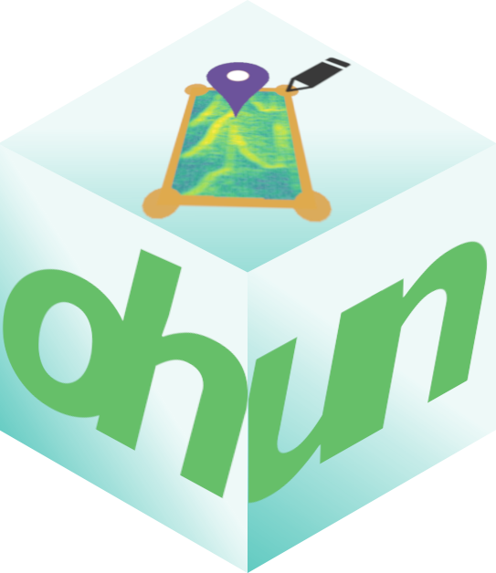

ohun is intended to facilitate the automated detection of sound events, providing functions to diagnose and optimize detection routines. It provides utilities for comparing detection and annotations of audio events described by frequency and time boxes.
The main features of the package are:
- The use of reference annotations for detection diagnostic and optimization
- The use of signal detection theory indices to evaluate detection performance
The package offers functions for:
- Curate references and acoustic data sets
- Diagnose detection performance
- Optimize detection routines based on reference annotations
- Energy-based detection
- Template-based detection
The implementation of detection diagnostics that can be applied to both built in detection methods and to those obtained from other software packages makes the package ohun an useful tool for conducting direct comparisons of the performance of different routines. In addition, the compatibility of ohun with data formats already used by other sound analysis R packages (e.g. seewave, warbleR) enables the integration of ohun into more complex acoustic analysis workflows in a popular programming environment within the research community.
All functions allow the parallelization of tasks (using the packages parallel and pbapply), which distributes the tasks among several processors to improve computational efficiency. The package works on sound files in ‘.wav’, ‘.mp3’, ‘.flac’ and ‘.wac’ format.
Install/load the package from CRAN as follows:
# From CRAN would be
install.packages("ohun")
#load package
library(ohun)To install the latest developmental version from github you will need the R package remotes:
remotes::install_github("ropensci/ohun")
#load package
library(ohun)Further system requirements due to the dependency seewave may be needed. Take a look a this link for instruction on how to install/troubleshoot these external dependencies.
Take a look at the vignettes for an overview of the main features of the packages:
This package has been peer-reviewed by rOpenSci.
Please cite ohun as follows:
Araya-Salas, M. (2022), ohun: diagnosing and optimizing automated sound event detection. R package version 0.1.1.